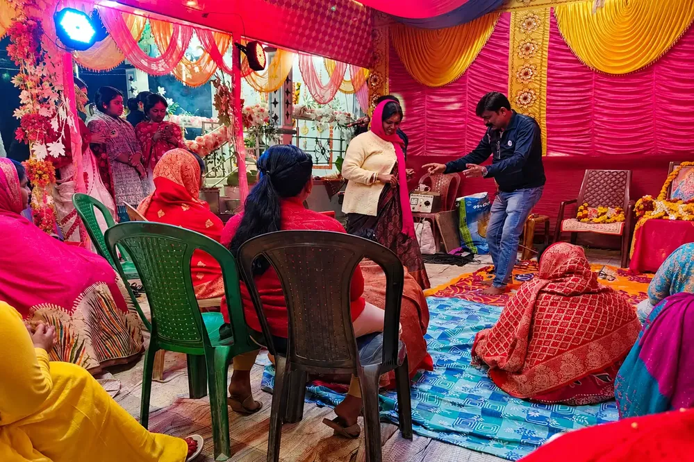
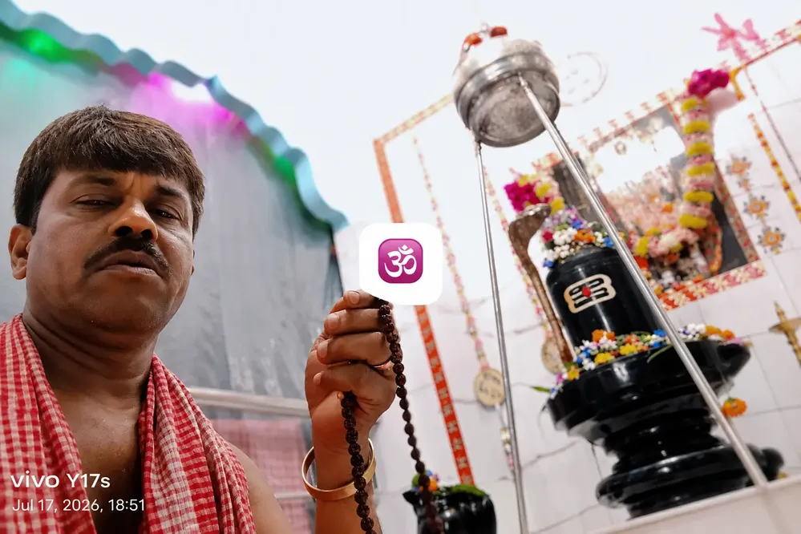

Explore the journey of Bholenath Dham through videos, celebrations and sacred moments.
🕉️ Explore the sacred teachings, prayers, mantras and divine names of Mahadev.
Welcome to the official Media Gallery of Bholenath Dham. Here you can explore photographs and videos capturing the temple's journey from its humble beginnings to its present form. Witness sacred festivals, devotional gatherings, temple construction milestones, and memorable moments shared by devotees. Every image and video reflects the blessings, devotion, and spiritual atmosphere of this holy abode of Lord Shiva.
The vacant land before the construction of Bholenath Dham. This is where the divine journey began.
A major milestone in the development of Bholenath Dham. The completion of the boundary wall provided security, structure, and a peaceful environment for devotees visiting the temple.
The early stages of construction of Bholenath Dham. What began as a vision slowly started taking shape through faith, devotion and dedication.
An important stage in the temple's development as the main structure began taking its recognizable form and the dream of Bholenath Dham moved closer to reality.
Watch the sacred construction journey of Bholenath Dham from foundation to structure.
The completed form of Bholenath Dham ready to welcome devotees.
Sacred celebrations, worship and Prasad distribution during Maha Shivratri.
A devotee offering prayers and Jalabhishek to Lord Shiva.
Construction of the shelter built for devotees during sun and rain.





